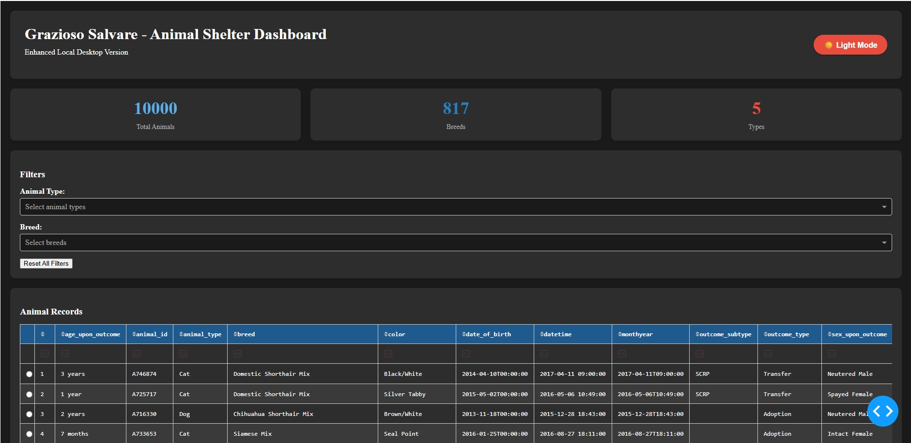
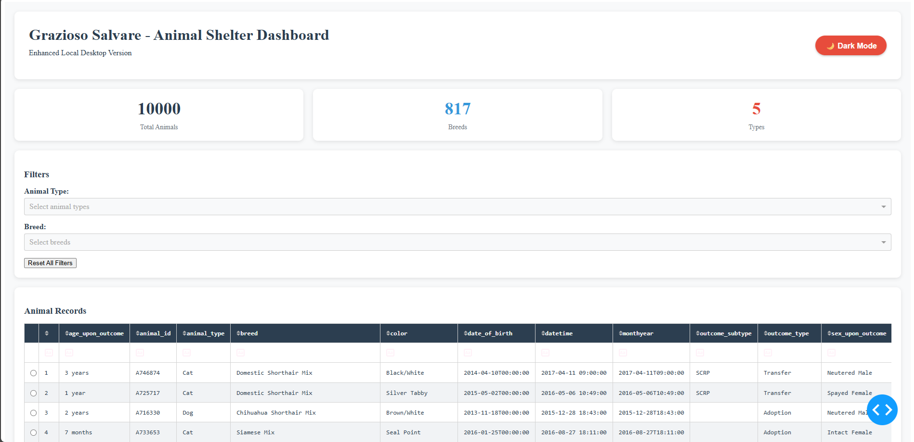
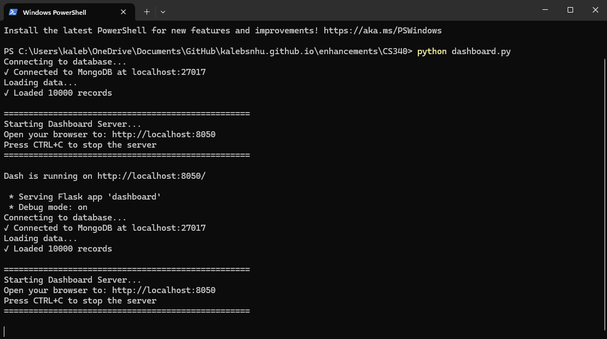
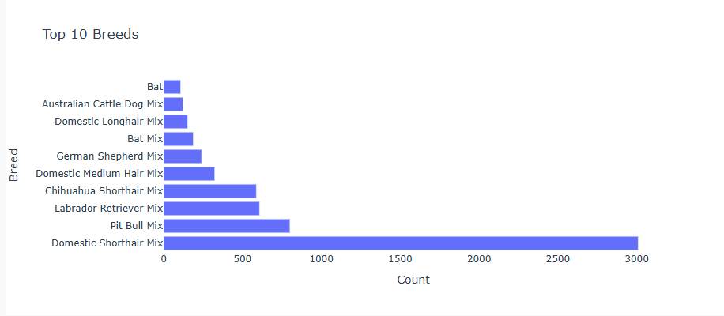
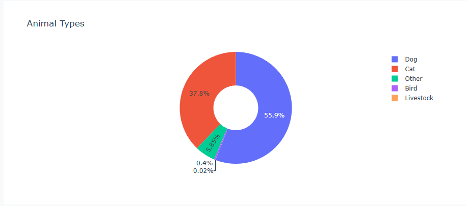
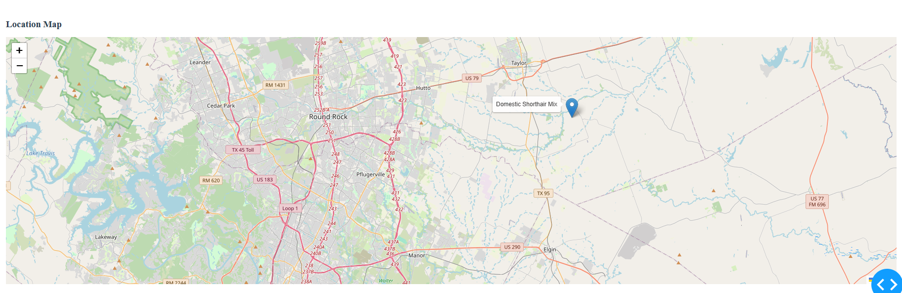

Databases
CS-340 Client and Server Development
Overview:
CS-340 Client and Server Development was originally created on the Apporto platform and was developed as an application that has a database of animals that you can view an overview realistic map detailing where the animals are located, graph that shows the % of animals vs other animals or the breeds vs breeds depending on the filters chosen within the application. Within the web-based Apporto application you can also filter animals through a table depending on filters such as breed or animal type such as cats vs dogs. I have ported the Apporto application to a local python server to be able to view the database of animals locally without Apporto. This application demonstrates the knowledge of databases by porting it from Apporto to a local python server and showing how to parse the database info and manipulate the data depending on the variables provided or the information requested.
Enhancements:
- Port application from an Apporto application to a local python server that parses the database and utilizes it within the application.
- Create a web-based application that utilizes the python server and parses the data from the local database to the application and a visually pleasent web-based application.
- Create a light and dark theme depending on user preferences to make the application more pleasent for local viewing and the user's needs.
Are The Enhancements Completed?:
The enhancements planned for CS-340 were completed, the application is now ported from Apporto to a local python database which means the user can utilize the system more effectively and without having to mess with Apporto, that also means you can manipulate the data and the web-based UI can now be locally ran instead of relying on a 3rd party. That means the application can perform effectively and efficiently. The application also has a light and dark theme depending on the user's needs and the graphs are also more detailed in terms of the filters working as intended and filtering more information.
Were There Any Issues During Enhancement Phase?
There were various issues during the development phase of porting CS-340 application from Apporto to a local database and web-based UI. The server would not properly launch at first which was due to incorrect python version, the database also was not filtering properly within MongoDB which was an issue with the syntax I was using and changed the way I parsed the information from the MongoDB database and the information was being properly parsed. The application was parsing incorrect data from the local database and after diagnosing issues related to my GET functions, the issue is now resolved and working effectively.
Light/Dark Theme:
The light and dark theme allows for the user to customize the viewing experience depending on their needs, some users like to have a light theme but the Dark theme has been very popular in multiple apps and seems to be a better and pleasent viewing experience when compared to light theme on most applications.


dashboard.py
light_theme = {
'background': '#f8f9fa',
'card': '#ffffff',
'primary': '#2c3e50',
'secondary': '#3498db',
'accent': '#e74c3c',
'success': '#27ae60',
'text': '#2c3e50',
'text_secondary': '#6c757d',
'border': '#dee2e6',
'hover': '#f1f3f5',
'table_header': '#2c3e50',
'table_selected': '#3498db'
}
dark_theme = {
'background': '#1a1a1a',
'card': '#2d2d2d',
'primary': '#5dade2',
'secondary': '#2980b9',
'accent': '#e74c3c',
'success': '#2ecc71',
'text': '#ffffff',
'text_secondary': '#b0b0b0',
'border': '#404040',
'hover': '#3a3a3a',
'table_header': '#1e5a8e',
'table_selected': '#2874a6'
}dashboard.py
@app.callback(
[Output('theme-store', 'data'),
Output('theme-toggle', 'children'),
Output('theme-toggle', 'style'),
Output('main-container', 'style'),
Output('header-section', 'style'),
Output('filters-section', 'style'),
Output('table-section', 'style'),
Output('map-container', 'style')],
[Input('theme-toggle', 'n_clicks')],
[State('theme-store', 'data')]
)
def toggle_theme(n_clicks, theme_data):
if n_clicks == 0:
is_dark = False
else:
is_dark = not theme_data.get('dark', False)
theme = get_theme_styles(is_dark)
button_text = '☀️ Light Mode' if is_dark else '🌙 Dark Mode'
button_style = {
'padding': '10px 20px',
'fontSize': '16px',
'border': 'none',
'borderRadius': '25px',
'cursor': 'pointer',
'fontWeight': 'bold',
'boxShadow': '0 2px 4px rgba(0,0,0,0.2)',
'transition': 'all 0.3s',
'backgroundColor': theme['accent'],
'color': 'white'
}
main_style = {
'backgroundColor': theme['background'],
'minHeight': '100vh',
'padding': '20px',
'color': theme['text'],
'transition': 'all 0.3s'
}
card_style = {
'backgroundColor': theme['card'],
'padding': '20px',
'marginBottom': '20px',
'borderRadius': '10px',
'boxShadow': '0 2px 8px rgba(0,0,0,0.1)',
'color': theme['text']
}
header_style = {**card_style, 'padding': '30px'}
return (
{'dark': is_dark},
button_text,
button_style,
main_style,
header_style,
card_style,
card_style,
card_style
)Ported From Apporto To Local Python Server:
The application has been ported from Apporto and uses a local python server to parse data from a database to a web-based application, it allows for the application to be effectively and efficiently utilized locally which contains graphs and other data related to the animals filtered.




dashboard.py
USERNAME = None
PASSWORD = None
HOST = 'localhost'
PORT = 27017
print("Connecting to database...")
db = AnimalShelter(username=USERNAME, password=PASSWORD, host=HOST, port=PORT)
print("Loading data...")
df = pd.DataFrame(db.read({}))
app = dash.Dash(__name__)animalShelter.py
def __init__(self, username=None, password=None, host='localhost', port=27017):
self.host = host
self.port = port
self.username = username
self.password = password
try:
if username and password:
connection_string = f'mongodb://{username}:{password}@{host}:{port}'
else:
connection_string = f'mongodb://{host}:{port}'
self.client = MongoClient(connection_string)
self.database = self.client['AAC']
self.collection = self.database['animals']
self.client.server_info()
print(f"✓ Connected to MongoDB at {host}:{port}")
except Exception as e:
print(f"✗ Error connecting to MongoDB: {e}")
raise